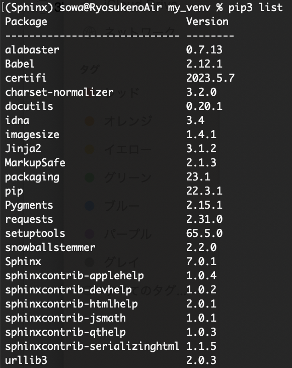

Sphinxの導入とGithubとの連携¶
前提¶
本ページでは、Sphinxをインストールしたのち、GitHub上のリポジトリと、Sphinxでドキュメントを作成するディレクトリを連携する所までの手順を説明します。致命的な環境依存性は少ないはずですが、自身の作業環境を以下に記します。
macOS (Windowsを使用されている場合は適宜読み換えて頂けると幸いです。)
Pythonはインストール済み (PythonはSphinxの使用に必須です。)
emacsをエディタとして使用
GitHubはB4M1ゼミで作成したアカウントを使用
Sphinx¶
インストール¶
Sphinxは Python Package Index に公開されているので、 pip コマンドを使用してインストールできます。
pip install -U Sphinx
注釈
Sphinxは多数のパッケージをインストールするため、仮想環境下でインストールしても良いかもしれません。参考までに、以下に新規の仮想環境にSphinxのみをインストールした場合のパッケージ一覧の画像を記載します。
動作確認¶
Sphinxが導入できたら、以下のコマンドで正しくインストールができたか確認をします。
pip show Sphinx
Github¶
ドキュメント用のリポジトリ作成¶
GitHubを用いてウェブページとしてドキュメントを公開する準備として、Github上に新たなリポジトリを作成する必要があります。 GitHubで自分のアカウントにサインインし、右上の+ボタンをクリックして New repository を選択します。
リポジトリの初期設定では、 Repository name にリポジトリ名を入力し、公開設定で Public を選択してください。また、 Add a README file にチェックを入れてください。
注意
設定の際 Add a README file のチェックを入れない場合、この後の設定が少し面倒なので、チェックを付けることを忘れないようにしてください。
リポジトリを作成したら、リポジトリのページから Settings → Pages と移動してください。
Pages 設定内部では、以下のように Source と Branch を設定して、 Save を押してください。なお、最初に Add a README file にチェックを入れなかった場合、ここで main ブランチが選択できないと思います。その際は、リポジトリに README.md を作成すると良いと思います。
以上でGitHub側のリポジトリ作成が完了しました。次は、ローカル環境に本リポジトリをcloneします。
Githubリポジトリのclone¶
B4M1ゼミで行った時と同様に、自身のローカル環境に、作成したGitHubのリポジトリをcloneします。リポジトリをcloneしても問題ないディレクトリで以下のコマンドを実行します。
git clone git@github.com:YourName/RepositoryName.git
cloneが終了したら、リポジトリと同じ名前のディレクトリが生成されているはずです。そのディレクトリ直下に、 docs という名前のディレクトリと、好きな名前のもう1つのディレクトリ (ここでは便宜上 Sphinx_files としますが、好きな名前で問題ありません。)を作成します。
mkdir docs
mkdir Sphinx_files
これからSphinxでドキュメントを作成するにあたり、 Sphinx_files ディレクトリ直下で作業を行います。 docs ディレクトリには、GitHub Pagesで公開する様々なファイルなどが今後保存されます。